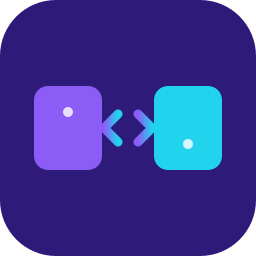
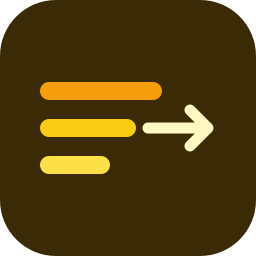

01 · Violet
İki nokta arasında çift yönlü dosya aktarımı

64 px
32 px
16 px
#2E1A78
#8B5CF6
#22D3EE
02 · Sunset
Dosya ve çevresinde döngüsel senkronizasyon oku
64 px
32 px
16 px
#2B0B3F
#FF6B35
#F72585
#FFD6A5
03 · Forest
Dosya yığınının hedefe doğru akışı
64 px
32 px
16 px
#064E3B
#34D399
#A3E635
#D1FAE5
04 · Graphite / Gold
Dosyanın içinden geçen aktarım oku
64 px
32 px
16 px
#111827
#FBBF24
#F5F3FF
05 · Yellow
Forest motifi, sarı/kehribar paletle

64 px
32 px
16 px
#3A2A06
#F59E0B
#FACC15
#FDE047
#FEF9C3